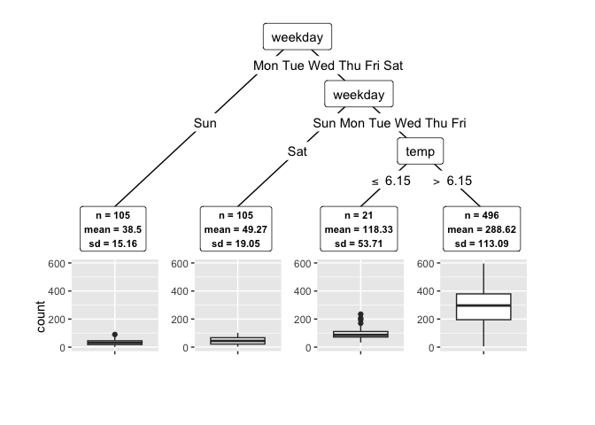

This R package finds subgroups in data with a single continuous response, suitable for either regression or treatment effect problems. Subgroups are identified via recursive partitioning, resulting in an interpretable tree. Conformal prediction methods (SCR, CV+ and Jackknife+) are leveraged to find homogeneous subgroups through robust uncertainty quantification. First, predictions are made using an arbitrary regression learner from the 100+ algorithms available in tidymodels. Then, the data is split recursively using the robust conformal criterion. The conftree package implements and extends the theory from Lee et al. (NeurIPS 2020).
Scope:
Installation
You can install the current development version from GitHub with:
if (!require("remotes")) {
install.packages("remotes")
}
remotes::install_github("holgstr/conftree")Quickstart
Let’s find subgroups in the Washington bike share data. We use a random forest from tidymodels as learner, a 5% miscoverage rate as alpha, and 10 cv_folds for the CV+ to quantify the uncertainty in subgroups:
library(conftree)
library(tidymodels)
data(bikes)
set.seed(1234)
# Specify the learner to be used for model training:
forest <- rand_forest() %>%
set_mode("regression") %>%
set_engine("ranger")
# Find optimal subgroups:
groups <- r2p(
data = bikes,
target = "count",
learner = forest,
cv_folds = 10,
alpha = 0.05,
gamma = 0.01,
lambda = 0.5,
max_groups = 3
)
# Display tree structure:
groups$tree
#> [1] root
#> | [2] weekday in Sun, Sat: *
#> | [3] weekday in Mon, Tue, Wed, Thu, Fri
#> | | [4] weather in rain: *
#> | | [5] weather in clear, misty: *
# Plot:
plot(groups)